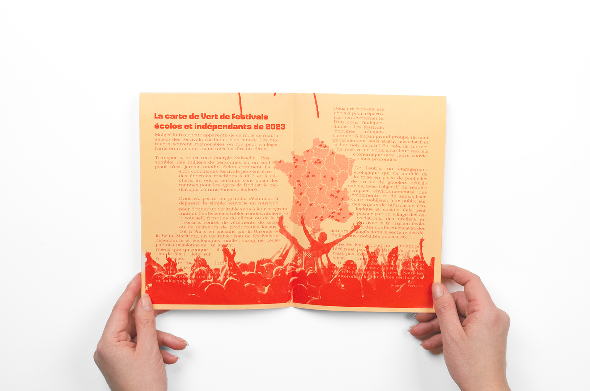
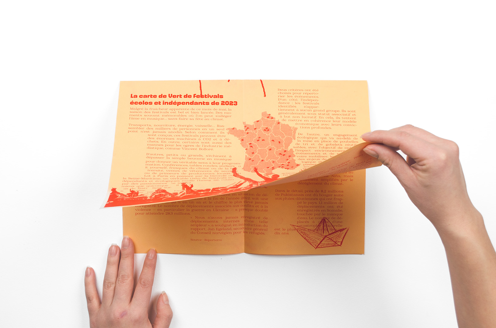
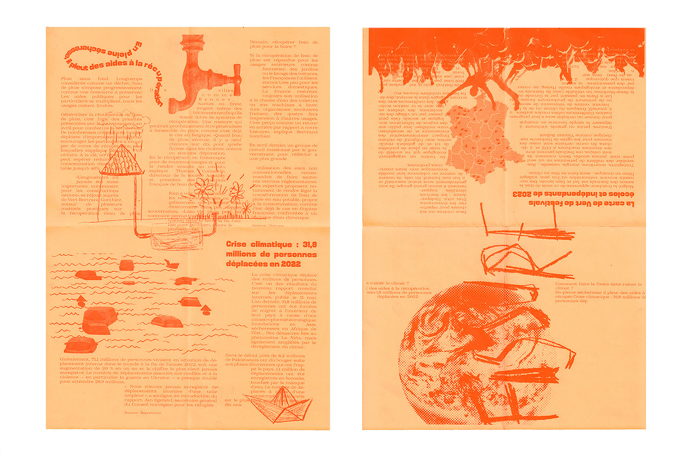
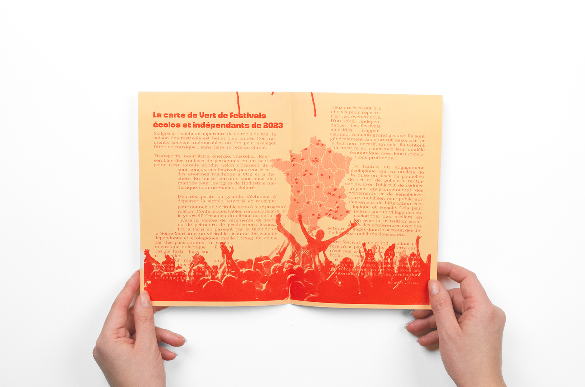
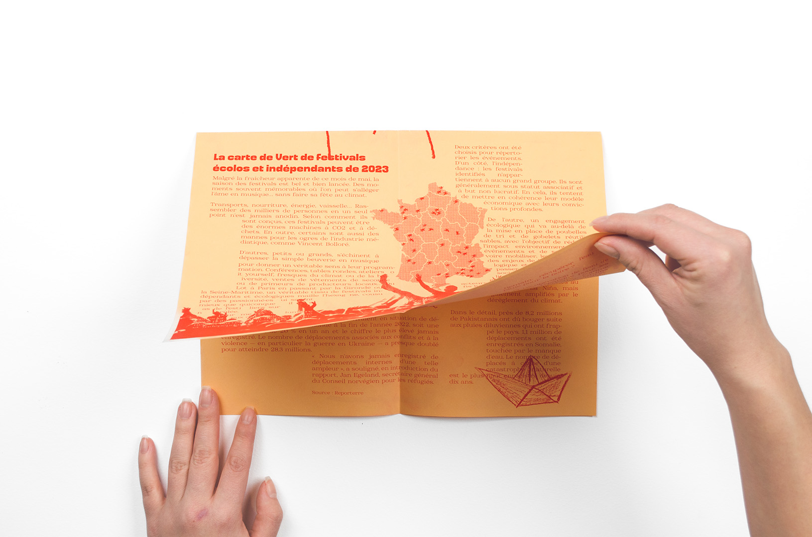
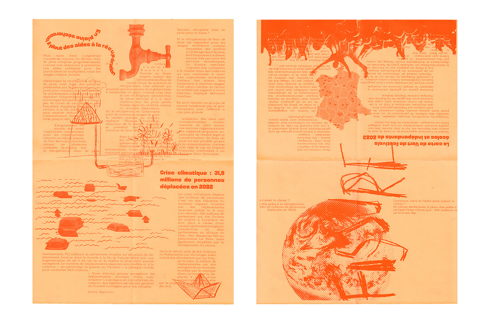

Fissure Fanzine | workshop
[2023]
Fanzine conçu à l’occasion d’un workshop sur la risographie encadré par Hadrien Herzog, un designer graphique.
Le fanzine que l’on a imaginé en groupe de trois élèves portait sur le thème de l’urgence climatique.
 




